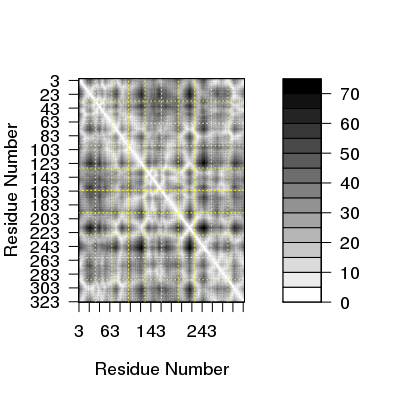

Color Palettes
Usage
bwr.colors(n) mono.colors(n)
Arguments
- n
- the number of colors in the palette (>=1).
Description
Create a vector of ‘n’ “contiguous” colors forming either a Blue-White-Red or a White-Gray-Black color palette.
Details
The function bwr.colors returns a vector of n color
names that range from blue through white to red.
The function mono.colors returns color names ranging from
white to black. Note: the first element of the returned vector
will be NA.
Value
Returns a character vector, cv, of color names. This can be
used either to create a user-defined color palette for subsequent
graphics with palette(cv), or as a col= specification in
graphics functions and par.
References
Grant, B.J. et al. (2006) Bioinformatics 22, 2695--2696.
The bwr.colors function is derived from the gplots
package function colorpanel by Gregory R. Warnes.
Examples
# Color a distance matrix pdb <- read.pdb( "1bg2" )Note: Accessing online PDB file HEADER MOTOR PROTEIN 04-JUN-98 1BG2d <- dm(pdb,"calpha") plot(d, color.palette=bwr.colors)
plot(d, resnum.1 = pdb$atom[pdb$calpha,"resno"], color.palette = mono.colors, xlab="Residue Number", ylab="Residue Number")